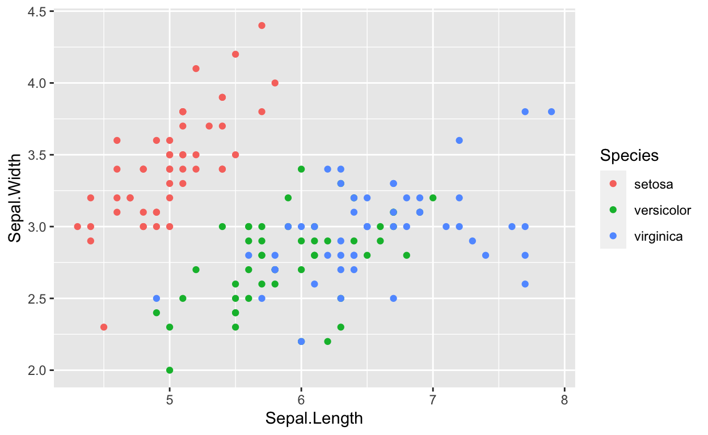

A similar, if not identical quiz should be completed for credit on canvas.
Today, we will focus on the iris dataset, which is built-in with R
Always glimpse() first.
glimpse(iris)Make the plot that best answers the question above for any of the numeric variables in iris
ggplot(iris, aes(___ = ___)) +
geom_____()# potential answers
ggplot(iris, aes(x = Petal.Length)) +
geom_histogram()
ggplot(iris, aes(x = Sepal.Width)) +
geom_density(fill = "pink")Make one (or more) of the good plots suggested above, with any continuous variable and Species as a categorical.
ggplot(iris, aes(___)) +
___ # and maybe moreggplot(iris, aes(x = Petal.Width, fill = Species)) +
geom_density(alpha = 0.4) # and maybe more
# OR
ggplot(iris, aes(x = Petal.Width)) +
geom_histogram() +
facet_wrap(~Species, ncol =1)
# OR
ggplot(iris, aes(x = Species, y = Petal.Width)) +
geom_jitter(width = .25, height = 0, alpha = .5) ggplot(iris, aes(x = Sepal.Length, y = Sepal.Width, color = Species))+
geom_point()